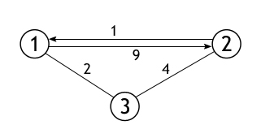
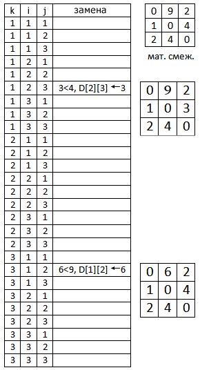

Алгоритм Флойда—Уоршелла — алгоритм для нахождения кратчайших расстояний между всеми вершинами взвешенного графа без циклов с отрицательными весами с использованием метода динамического программирования.
Если граф не содержит рёбер с отрицательным весом, то для решения этой проблемы можно использовать алгоритм Дейкстры для нахождения кратчайшего пути от одной вершины до всех остальных, запустив его на каждой вершине.
Для реализации алгоритма Флойда – Уоршелла сформируем матрицу смежности D[][] графа G=(V, E), в котором каждая вершина пронумерована от 1 до |V|. Эта матрица имеет размер |V|´|V|, и каждому ее элементу D[i][j] присвоен вес ребра, идущего из вершины i в вершину j. По мере выполнения алгоритма, данная матрица будет перезаписываться: в каждую из ее ячеек внесется значение, определяющее оптимальную длину пути из вершины i в вершину j (отказ от выделения специального массива для этой цели сохранит память и время).
Теперь, перед составлением основной части алгоритма, необходимо разобраться с содержанием матрицы кратчайших путей. Поскольку каждый ее элемент D[i][j] должен содержать наименьший из имеющихся маршрутов, то сразу можно сказать, что для единичной вершины он равен нулю, даже если она имеет петлю (отрицательные циклы не рассматриваются), следовательно, все элементы главной диагонали (D[i][i]) нужно обнулить.
А чтобы нулевые недиагональные элементы (матрица смежности могла иметь нули в тех местах, где нет непосредственного ребра между вершинами i и j) сменили по возможности свое значение, определим их равными бесконечности, которая в программе может являться, например, максимально возможной длинной пути в графе, либо просто – большим числом.
Положим, что в качестве матрицы смежности, каждый элемент которой хранит вес некоторого ребра, была задана следующая матрица:
| 0 | 9 | 2 |
| 1 | 0 | 4 |
| 2 | 4 | 0 |
Количество вершин в графе, представлением которого является данная матрица, равно 3, и, причем между каждыми двумя вершинами существует ребро. Вот собственно сам этот граф:
Задача алгоритма: перезаписать данную матрицу так, чтобы каждая ячейка вместо веса ребра из i в j, содержала кратчайший путь из i в j. Для примера взят совсем маленький граф, и поэтому не будет не чего удивительного, если матрица сохранит свое изначальное состояние. Но результат тестирования программы показывает замену двух значений в ней. Следующая схема поможет с анализом этого конкретного примера.
В данной таблице показаны 27 шагов выполнения основной части алгоритма. Их столько по той причине, что время выполнения метода равно O(|V|3). Наш граф имеет 3 вершины, а 33=27. Первая замена происходит на итерации, при которой k=1, i=2, а j=3. В тот момент D[2][1]=1, D[1][3]=2, D[2][3]=4. Условие истинно, т. е. D[1][3]+D[3][2]=3, а 3<4, следовательно, элемент матрицы D[2][3] получает новое значение. Следующий шаг, когда условие также истинно привносит изменения в элемент, расположенный на пересечении второй строки и третьего столбца.
Выберите другую тему для изучения:
Поиск в ширину